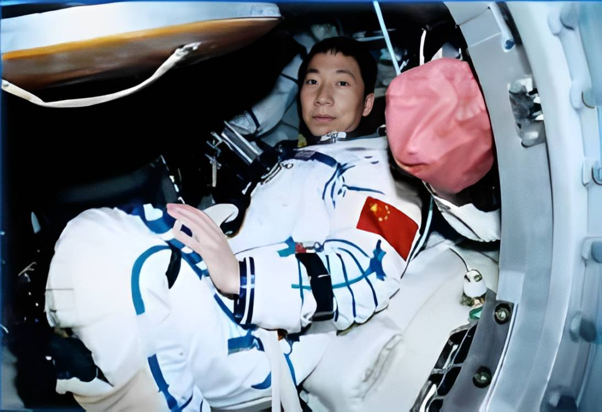

中国航天 辉煌足迹
启航
中国航天一览
东方红一号
神舟一号
神舟五号
嫦娥一号
天宫一号
1970年4月24日中国发射的第一颗人造卫星
1999年11月20日中国发射的第一艘无人试验飞船
2003年10月15日中国发射的第一艘载人飞船
2007年10月24日中国首颗探月卫星成功奔月
2011年9月29日中国首个自主研制的载人空间试验平台发射成功

1975年11月26日,中国首颗返回式卫星，在酒泉卫星发射中心发射成功 。卫星收放自如，我国成为世界上第三个掌握卫星返回技术的国家。
赴九天，问苍穹
我们始终没有忘记
我们的征途是星辰大海
我们始终没有忘记
我们的征途是星辰大海
时光穿梭
1970年4月24日，首次发射的长征一号运载火箭成功地将第一颗人造卫星“东方红一号”送入预定轨道
1981年9月20日,掌握一箭多星。中国成功地用一枚运载火箭发射了3颗科学实验卫星（三颗卫星分别是实践二号、实践二号甲、实践二号乙），这种“一箭三星”技术当时在世界引起轰动。

2003年10月15日,我国成功进行了第一次载人航天飞行，中国第一艘载人飞船神舟五号成功发射，中国首位航天员杨利伟成为浩瀚太空的第一位中国访客,中国人首次飞天圆满成功。
2012年6月22日，中国首次手控交会对接任务成功，标志着我国成为世界上第三个独立自主全面掌握交会对接技术的国家。
2020年4月24日我国行星探测任务正式命名为“天问”，将我国首次火星探测任务命名为“天问一号”，顺利降落在火星乌托邦平原。